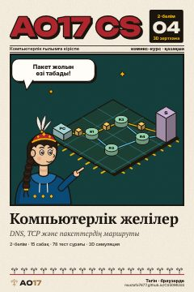

AO17 CS курсы / 2-бөлім: 3D зертхана / Компьютерлік желілер

Компьютерлік желілер · 8-сабақ · ≈15 мин · 2 қадам · 4 сұрақ
NAT: адрес аудару
NAT
Бір ашық IP артында жүздеген құрылғы: адрес аудару кестесі.
Кино-түсіндіру: сабақтың өзегі бір минуттық мультфильмде. Мәтіні төменде.
Фильмнің мәтіні (сабақтың қадамдарынан құрастырылған)
- Сұрақ. Қай адрес интернетте маршрутталмайды (жеке)?
- Бейне. Кеңсе ғимараты: сырттан бір ғана мекенжай. Хат жібергенде хатшы «қай бөлмеден» екенін журналға жазып, конвертке ғимараттың мекенжайы мен журнал нөмірін қояды.
- Болжа. Қай адрес интернетте маршрутталмайды (жеке)? Жауап: 10.42.0.7. 10.0.0.0/8: RFC 1918 жеке блогы. Мұндай адреспен шыққан пакетті интернет роутерлері тастайды: сондықтан NAT керек.
- Көр. 1-қадам, «Сыртқа шығу». IPv4 адрестері таусылды. Үйдегі 10 құрылғыға 10 ашық адрес жоқ: провайдер бір ғана береді.
- Көр. 2-қадам, «Ішке кіру». Сыртқы сервердің жауабы NAT-тың ашық адресі мен портына келеді. Роутер кестеден сол портты тауып, пакетті дұрыс ішкі құрылғыға жеткізеді. Ал кестеде жоқ портқа келген пакет (ешкім шақырмаған): тасталады.
- Көр. Нақты әлемде: NAT-тың бағасы: үйдегі компьютерде сервер ұстау қиын (ойын сервері, файл бөлісу).
- Түйін. Бір ашық IP артында жүздеген құрылғы: адрес аудару кестесі.
- Түйін. Жиі қате: Неге NAT артындағы үй компьютерінде веб-сервер ашу қиын? Жауап: «Үй компьютерлері веб-серверді қолдамайды». Дұрысы: «Сырттан келген шақырылмаған қосылымдар үшін NAT кестесінде жазба жоқ: роутер оларды тастайды». Жазба тек ішкі құрылғы сыртқа шыққанда пайда болады.…
1Сыртқа шығу
Идея
IPv4 адрестері таусылды. Үйдегі 10 құрылғыға 10 ашық адрес жоқ: провайдер бір ғана береді. Шешім: NAT (network address translation): ішкі құрылғылар жеке адрестерді (192.168.x.x, 10.x.x.x) қолданады, ал роутер шығатын пакеттердің жіберуші адресін өзінің ашық адресіне ауыстырады.
Бірнеше құрылғыны ажырату үшін роутер порт нөмірін де ауыстырады және NAT кестесінде сақтайды:
192.168.1.10:51000 ↔ 203.0.113.7:40000
192.168.1.11:51000 ↔ 203.0.113.7:40001Түйсік
Кеңсе ғимараты: сырттан бір ғана мекенжай. Хат жібергенде хатшы «қай бөлмеден» екенін журналға жазып, конвертке ғимараттың мекенжайы мен журнал нөмірін қояды.
Есептеп көрейік
Порт: 16 бит, 65 535 мән. Бір ашық IP артында теориялық тұрғыда ≈ 64 000 бір мезгілдегі байланыс. Провайдерлердің CGNAT-ы мыңдаған абонентті бір IP-ге жинайды: әрқайсысына порттардың бір бөлігі.
Нақты әлемде
192.168.0.0/16, 10.0.0.0/8, 172.16.0.0/12: RFC 1918 жеке блоктары; олар интернетте маршрутталмайды. NAT IPv4-тің өмірін 20 жылдан астам ұзартты.
💡 Түйін: NAT кестесі: 3D-дегі роутердің «жады»: ол қай ішкі құрылғы қай сыртқы портпен сөйлесетінін есте сақтайды.
Енді сен
Екі түрлі ішкі құрылғыдан сыртқа сұраныс жібер, NAT кестесіне қара.
Өзіңді тексер
Қай адрес интернетте маршрутталмайды (жеке)?
Жауабы мен түсіндірмесі
Дұрыс жауап: 10.42.0.7
10.0.0.0/8: RFC 1918 жеке блогы. Мұндай адреспен шыққан пакетті интернет роутерлері тастайды: сондықтан NAT керек.
Екі ішкі құрылғы бір ішкі портты (51000) қолданса, NAT оларды қалай ажыратады?
Жауабы мен түсіндірмесі
Дұрыс жауап: Әрқайсысына әр түрлі сыртқы порт береді
Сыртқы жақтан тек (ашық IP, порт) көрінеді, сондықтан әр байланыс бірегей сыртқы порт алады.
2Ішке кіру
Идея
Сыртқы сервердің жауабы NAT-тың ашық адресі мен портына келеді. Роутер кестеден сол портты тауып, пакетті дұрыс ішкі құрылғыға жеткізеді.
Ал кестеде жоқ портқа келген пакет (ешкім шақырмаған): тасталады. Бұл: жанама қауіпсіздік: сырттан ішкі құрылғыға тікелей кіру мүмкін емес.
Түйсік
Хатшы журналында жоқ хатты кімге беру керегін білмейді: оны лақтырады.
Есептеп көрейік
Кесте: 40000 → 192.168.1.10, 40001 → 192.168.1.11.
- 40001 портына жауап → 192.168.1.11 ✓
- 40999 портына пакет → жазба жоқ → тасталды ✗
Нақты әлемде
NAT-тың бағасы: үйдегі компьютерде сервер ұстау қиын (ойын сервері, файл бөлісу). Шешімдер: port forwarding (роутерде қолмен ереже), UPnP, ал P2P қосымшалар (Zoom, WebRTC) NAT traversal әдістерін қолданады: STUN серверінен өз сыртқы адресін біліп, екі жақ бір мезгілде бір-біріне «тесік ашады» (hole punching).
IPv6-да әр құрылғыға жеткілікті адрес бар (2¹²⁸ ≈ 3.4·10³⁸): NAT-тың қажеті жоқ, ал қорғаныс үшін firewall қолданылады.
⚠ Жиі қате: NAT-ты firewall деп санау. Ол кездейсоқ қорғайды, бірақ UPnP, ішкі зиянды бағдарламалар және IPv6 оны оңай айналып өтеді.
Енді сен
Сұраныс жіберген құрылғының портына жауап жеткіз, сосын кестеде жоқ портқа пакет жібер.
3D симуляцияда орында
- Жауапты дұрыс құрылғыға жеткіз
- Шақырылмаған пакеттің тасталғанын көр
Өзіңді тексер
Неге NAT артындағы үй компьютерінде веб-сервер ашу қиын?
Жауабы мен түсіндірмесі
Дұрыс жауап: Сырттан келген шақырылмаған қосылымдар үшін NAT кестесінде жазба жоқ: роутер оларды тастайды
Жазба тек ішкі құрылғы сыртқа шыққанда пайда болады. Сервер үшін роутерде port forwarding ережесін қолмен қою керек.
Неге IPv6-да NAT әдетте керек емес?
Жауабы мен түсіндірмесі
Дұрыс жауап: Адрестер саны жеткілікті: әр құрылғыға ашық адрес беруге болады
2¹²⁸ адрес: жер шарындағы әр құмға миллиардтаған. NAT адрес тапшылығынан туған; IPv6-да қорғау үшін firewall қолданылады.
Сабақ AO17 командасының INSIDE TECH 3D платформасынан алынған: дәріс, тест және 3D симуляция - бір сабақтың бөліктері. Симуляция осы сайттың ішінде ашылады, прогресі «Менің шаңырағым» бетіне қосылады.